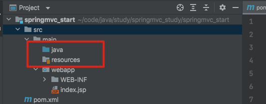
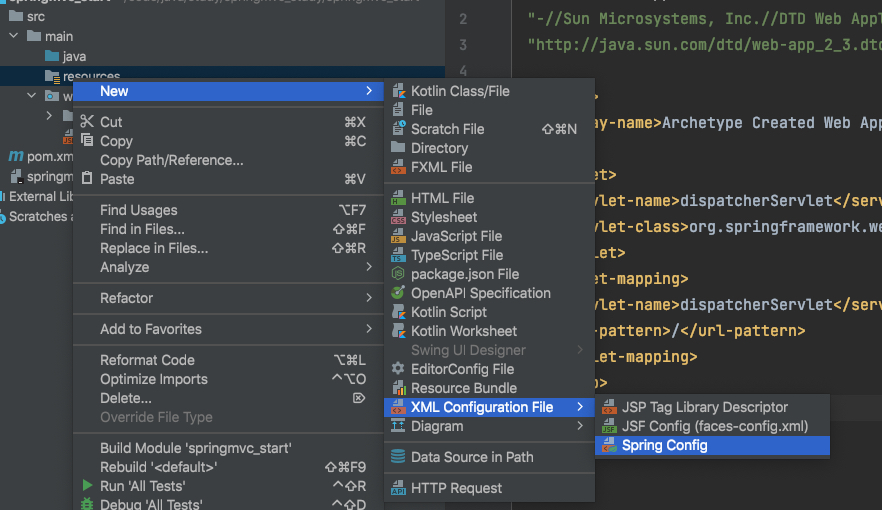
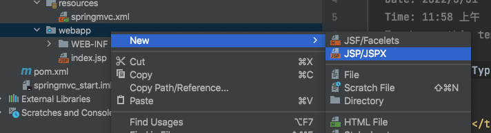
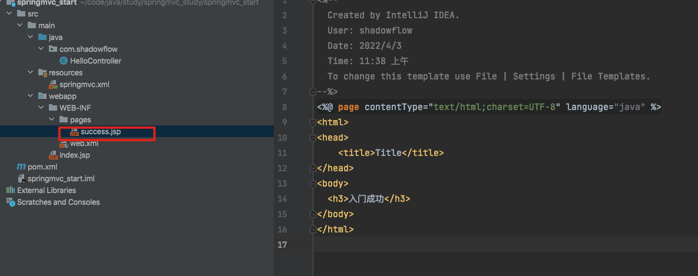
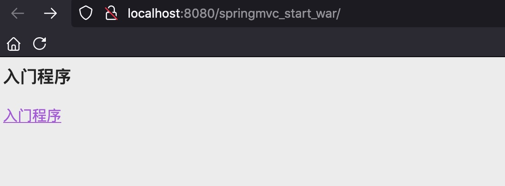
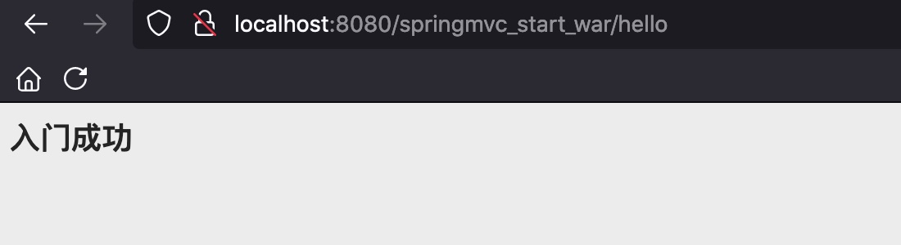

SpringMVC入门案例学习
1. 需求分析

- 搭建开发的环境
- 编写入门程序
2. 环境搭建
创建一个空的项目
新建一个模块

添加源码目录和资源目录

pom文件修改
1
2
3
4
5
6
7<!-- 修改编译版本为1.8，并添加版本锁定 -->
<properties>
<project.build.sourceEncoding>UTF-8</project.build.sourceEncoding>
<maven.compiler.source>1.8</maven.compiler.source>
<maven.compiler.target>1.8</maven.compiler.target>
</properties>1
2
3
4
5
6
7
8
9
10
11
12
13
14
15
16
17
18
19
20
21
22
23
24
25
26
27<!-- 添加依赖 -->
<dependency>
<groupId>org.springframework</groupId>
<artifactId>spring-context</artifactId>
<version>${spring.version}</version>
</dependency>
<dependency>
<groupId>org.springframework</groupId>
<artifactId>spring-web</artifactId>
<version>${spring.version}</version>
</dependency>
<dependency>
<groupId>org.springframework</groupId>
<artifactId>spring-webmvc</artifactId>
<version>${spring.version}</version>
</dependency>
<dependency>
<groupId>javax.servlet</groupId>
<artifactId>servlet-api</artifactId>
<version>2.5</version>
<scope>provided</scope>
</dependency>
<dependency>
<groupId>javax.servlet.jsp</groupId>
<artifactId>jsp-api</artifactId>
<version>2.0</version>
</dependency>配前端控制器（servlet），在web.xml中配置
任何请求都会经过该servlet
1
2
3
4
5
6
7
8<servlet>
<servlet-name>dispatcherServlet</servlet-name>
<servlet-class>org.springframework.web.servlet.DispatcherServlet</servlet-class>
</servlet>
<servlet-mapping>
<servlet-name>dispatcherServlet</servlet-name>
<url-pattern>/</url-pattern>
</servlet-mapping>
配置spring 配置文件，名字我取的是springmvc.xml

部署


3. 编写入门程序
3.1 修改index.jsp
打开index.jsp如下
1 | <html> |
没有编码信息，我们将其删除，使用idea创建会自动加上

1 | <%@ page contentType="text/html;charset=UTF-8" language="java" %> |
做个简单改造
1 | <%@ page contentType="text/html;charset=UTF-8" language="java" %> |
3.2 编写控制器
1 | package com.shadowflow; |

3.3 添加spring的配置
添加名称空间以及扫描的包
1 |
|
3.4 添加注解
给HelloController添加@Controller注解，表示把这个类交给spring ioc容器，添加@RequestMapping注解映射请求路径
1 | package com.shadowflow; |
3.5 加载springmvc配置文件
1 | <init-param> |
<init-param>传入配置文件路径
<load-on-startup>一般来说servlet在第一次发请求才创建，配置了这个参数表示启动服务就会创建，然后启动就会创建spring对象
整改文件如下
1 |
|
3.6 控制器返回
1 |
|
返回值可以任意写，这里我写的success，success表示返回jsp页面名称
所以创建一个success.jsp

除此之外，还要在springmvc配置文件中配置视图解析器。
1 | <!-- 视图解析器 --> |
添加注解支持
1 |
|
完整springmvc配置文件如下
1 |
|
3.7 给index.jsp添加相对路径
1 | =<%-- |
3.8 启动程序
启动程序，访问效果
 4. 总结
步骤：
启动服务器，加载一些配置
<load-on-startup>1</load-on-startup>——>DispatcherServlet对象创建- springmvc.xml
- HelloController创建成对象
发送请求